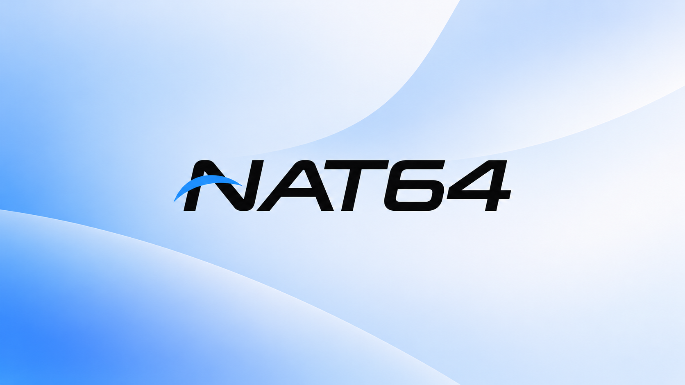

Engineering Notes
& System Workflows.
Practical documentation across local generative AI video pipelines, Debian server environments, and independent web engineering.
Featured Guide · Infrastructure
服务器初始化与部署指南：从系统构建到运维清单
全新 Debian / Ubuntu 服务器环境快速配置、常用工具安装、Xray 面板与日常运维。助你从零构建高可用且结构清晰的服务端生产基线。
JAN 2026 · 8 MIN READ · DEBIAN / UBUNTU
Read Flagship Guide


纯 IPv6 VPS 如何访问 IPv4：NAT64 原理与回滚
从地址与路由诊断开始，理解 DNS64/NAT64 分工，区分纯 IPv6 与双栈场景，建立安全验证和回滚流程。

3X-UI 安装与 TLS 升级指南
3X-UI 面板一键安装、TLS 证书自动申请与安全加固。可视化管理多协议节点与实时流量统计。

Hysteria 2 部署与网络优化实践
从服务端配置到客户端连接的完整工程实践，包含 UDP 吞吐优化与 BBR 拥塞控制调优。

小米路由器 BE6500 解锁 SSH 安装 ShellCrash
免刷固件保留官方 Mesh 与硬件加速功能，解锁 SSH 终端并安装 ShellCrash 网关代理。